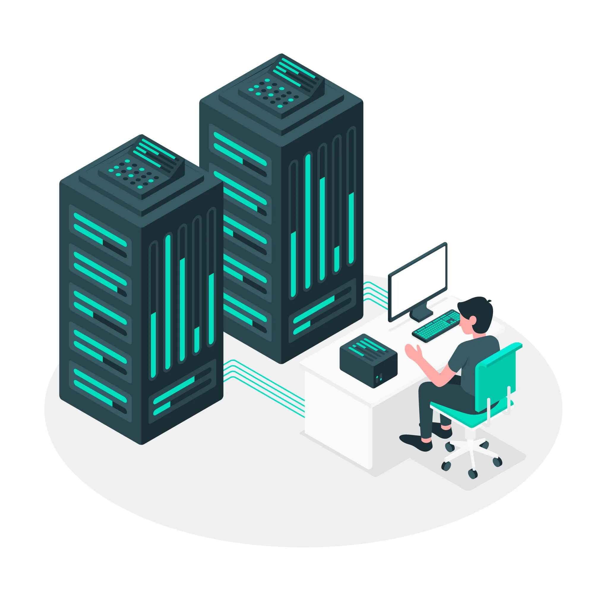
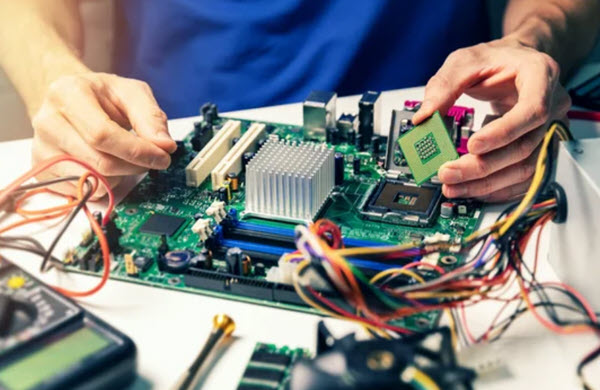

Ofrecemos soluciones completas para optimizar la infraestructura tecnológica de tu empresa.
Diseñamos e instalamos redes cableadas e inalámbricas seguras, adaptadas a las necesidades de cada empresa, garantizando estabilidad y velocidad.

Implementamos y administramos servidores eficientes, tanto físicos como virtuales, optimizando recursos y asegurando su disponibilidad.
Modernizamos la gestión interna de tu empresa con soluciones digitales que aumentan la productividad y reducen los errores manuales.

Ofrecemos soporte continuo, mantenimiento preventivo y correctivo para mantener tus sistemas y redes en perfecto estado.